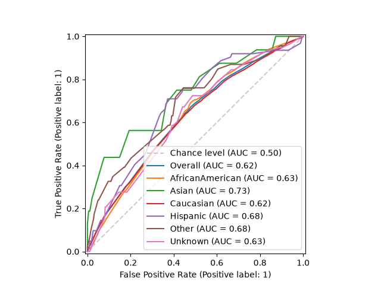
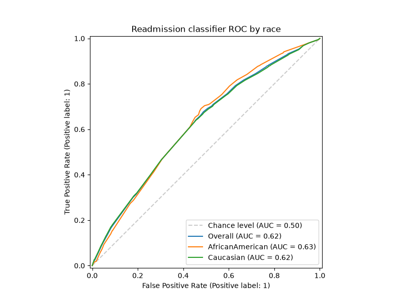

Note
Go to the end to download the full example code. or to run this example in your browser via JupyterLite
Plotting ROC curves by sensitive feature#
The Receiver Operating Characteristic (ROC) curve is a common way to evaluate a binary classifier. It plots the true positive rate against the false positive rate as the decision threshold is varied, and the area under the curve (AUC) summarizes how well the model separates the positive and negative classes.
When assessing fairness, it is useful to draw one ROC curve per subgroup defined by a sensitive feature. If the curves lie on top of one another the model ranks the two classes equally well for every group; curves that diverge indicate that the model discriminates between the classes better for some groups than for others. The threshold can then be tuned per group to trade off sensitivity and specificity more equitably.
Fairlearn provides
plot_roc_curve_by_group() to draw these curves
directly from the predicted scores and the sensitive feature(s).
Note
This example requires matplotlib, which is an optional dependency
of Fairlearn.
import matplotlib.pyplot as plt
import pandas as pd
from sklearn.metrics import roc_auc_score
from sklearn.model_selection import train_test_split
from sklearn.tree import DecisionTreeClassifier
from fairlearn.datasets import fetch_diabetes_hospital
from fairlearn.metrics import MetricFrame, plot_roc_curve_by_group
Load the data#
We use the diabetes hospital readmission dataset, where the task is to predict
whether a patient is readmitted to hospital. race is used as the sensitive
feature.
data = fetch_diabetes_hospital(as_frame=True)
X = data.data.copy()
X.drop(columns=["readmitted", "readmit_binary"], inplace=True)
y_true = data.target
X_ohe = pd.get_dummies(X)
race = X["race"]
X_train, X_test, y_train, y_test, A_train, A_test = train_test_split(
X_ohe, y_true, race, test_size=0.3, random_state=123
)
Train a classifier#
Any classifier that can output scores works. We use the predicted probability
of the positive class as y_score.
classifier = DecisionTreeClassifier(min_samples_leaf=20, max_depth=6, random_state=123)
classifier.fit(X_train, y_train)
y_score = classifier.predict_proba(X_test)[:, 1]
Basic usage#
The simplest call draws one curve per subgroup, plus the overall curve and the chance-level diagonal for reference.
# Plot ROC curves by group
plot_roc_curve_by_group(y_test, y_score, sensitive_features=A_test)
plt.show()
# End ROC curves by group

Customizing the plot#
Pass your own matplotlib.axes.Axes to control the figure size, add a
title, or apply a style. To compare only a few subgroups, filter the inputs
before calling the function.
groups_to_compare = ["Caucasian", "AfricanAmerican"]
mask = A_test.isin(groups_to_compare)
fig, ax = plt.subplots(figsize=(8, 6))
plot_roc_curve_by_group(
y_test[mask],
y_score[mask],
sensitive_features=A_test[mask],
ax=ax,
title="Readmission classifier ROC by race",
)
plt.show()

Getting the AUC scores#
plot_roc_curve_by_group() only draws the plot. To
obtain the AUC scores programmatically, use
MetricFrame, the idiomatic way to disaggregate any
metric in Fairlearn. Note that roc_auc_score expects the scores, so we pass
y_score as y_pred.
auc_by_group = MetricFrame(
metrics=roc_auc_score,
y_true=y_test,
y_pred=y_score,
sensitive_features=A_test,
)
print("Overall AUC:", auc_by_group.overall)
print("AUC by group:")
print(auc_by_group.by_group)
Overall AUC: 0.6233978091832989
AUC by group:
race
AfricanAmerican 0.625157
Asian 0.732735
Caucasian 0.618783
Hispanic 0.676523
Other 0.681301
Unknown 0.626020
Name: roc_auc_score, dtype: float64
Total running time of the script: (0 minutes 5.427 seconds)
Estimated memory usage: 195 MB